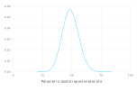
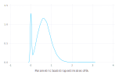
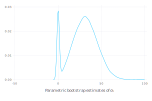
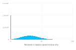

Parametric bootstrap for linear mixed-effects models
Julia is well-suited to implementing bootstrapping and other simulation-based methods for statistical models. The parametricbootstrap function in the MixedModels package provides an efficient parametric bootstrap for linear mixed-effects models.
The parametric bootstrap
Bootstrapping is a family of procedures for generating sample values of a statistic, allowing for visualization of the distribution of the statistic or for inference from this sample of values.
A parametric bootstrap is used with a parametric model, m, that has been fit to data. The procedure is to simulate n response vectors from m using the estimated parameter values and refit m to these responses in turn, accumulating the statistics of interest at each iteration.
The parameters of a LinearMixedModel object are the fixed-effects parameters, β, the standard deviation, σ, of the per-observation noise, and the covariance parameter, θ, that defines the variance-covariance matrices of the random effects.
For example, a simple linear mixed-effects model for the Dyestuff data in the lme4 package for R is fit by
using DataFrames, Gadfly, MixedModels, Random, RData
testdir = normpath(joinpath(dirname(pathof(MixedModels)), "..", "test"));
const dat = Dict(Symbol(k)=>v for (k,v) in load(joinpath(testdir, "dat.rda")));ds = names!(dat[:Dyestuff], [:Batch, :Yield]) # the Dyestuff data
m1 = fit!(LinearMixedModel(@formula(Yield ~ 1 + (1 | Batch)), ds))Linear mixed model fit by maximum likelihood
Yield ~ 1 + (1 | Batch)
logLik -2 logLik AIC BIC
-163.66353 327.32706 333.32706 337.53065
Variance components:
Column Variance Std.Dev.
Batch (Intercept) 1388.3333 37.260345
Residual 2451.2500 49.510100
Number of obs: 30; levels of grouping factors: 6
Fixed-effects parameters:
──────────────────────────────────────────────────
Estimate Std.Error z value P(>|z|)
──────────────────────────────────────────────────
(Intercept) 1527.5 17.6946 86.326 <1e-99
──────────────────────────────────────────────────To bootstrap the model parameters, we first initialize a random number generator
rng = MersenneTwister(1234321);then create a bootstrap sample
samp = parametricbootstrap(rng, 100_000, m1);
DataFrame(samp.bstr)100000×4 DataFrames.DataFrame
│ Row │ objective │ σ │ β₁ │ θ │
│ │ Float64 │ Float64 │ Float64 │ StaticAr… │
├────────┼───────────┼─────────┼─────────┼────────────┤
│ 1 │ 339.022 │ 67.4315 │ 1509.13 │ [0.212245] │
│ 2 │ 322.689 │ 47.9831 │ 1538.08 │ [0.53284] │
│ 3 │ 324.002 │ 50.1346 │ 1508.02 │ [0.434076] │
│ 4 │ 331.887 │ 53.2238 │ 1538.47 │ [0.771383] │
│ 5 │ 317.771 │ 45.2975 │ 1520.62 │ [0.423428] │
│ 6 │ 315.181 │ 36.7556 │ 1536.94 │ [1.33812] │
│ 7 │ 333.641 │ 53.8161 │ 1519.88 │ [0.867993] │
⋮
│ 99993 │ 316.391 │ 46.8395 │ 1550.0 │ [0.124962] │
│ 99994 │ 317.945 │ 44.8718 │ 1521.41 │ [0.478633] │
│ 99995 │ 325.988 │ 51.6486 │ 1555.92 │ [0.44905] │
│ 99996 │ 326.679 │ 52.1719 │ 1551.36 │ [0.455478] │
│ 99997 │ 331.908 │ 61.1217 │ 1500.47 │ [0.0] │
│ 99998 │ 316.566 │ 40.2188 │ 1531.02 │ [0.905006] │
│ 99999 │ 323.937 │ 51.2282 │ 1530.76 │ [0.331144] │
│ 100000 │ 315.836 │ 38.3816 │ 1544.5 │ [1.1136] │The results from the bootstrap sampling are returned as a Table, as defined in the TypedTables.jl package. The $\theta$ column is a vector - in this case a one-dimensional vector. The first and last functions are useful for extracting individual elements from the sampled vectors.
Notice that, for some samples, the estimated value of $\theta$ is [0.0]. In fact, this is the case for about about 10% of all the samples.
sum(iszero, samp.θ)10090A density plot of the bootstrapped values of σ shows a slightly skewed but unimodal distribution
plot(x=samp.σ, Geom.density, Guide.xlabel("Parametric bootstrap estimates of σ"))
but a density plot of the bootstrap estimates of $\theta_1$, or of $\sigma_1=\theta_1 \cdot \sigma$
plot(x=first.(samp.θ), Geom.density, Guide.xlabel("Parametric bootstrap estimates of θ₁"))
plot(x=first.(samp.σs.Batch), Geom.density, Guide.xlabel("Parametric bootstrap estimates of σ₁"))
has a mode at zero. Although this mode appears to be diffuse, this is an artifact of the way that density plots are created. In fact, it is a pulse, as can be seen from a histogram.
plot(x=first.(samp.σs.Batch), Geom.histogram, Guide.xlabel("Parametric bootstrap estimates of σ₁"))